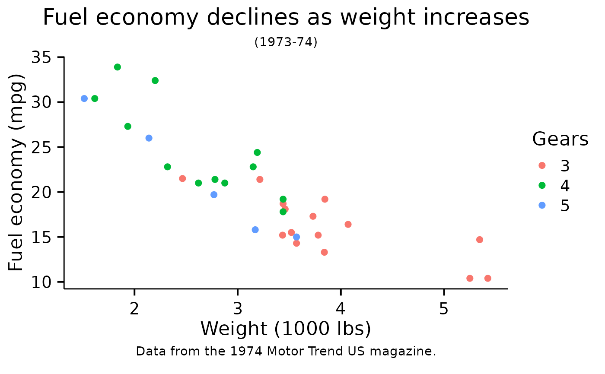

Plotting theme modified from theme_bw
theme_mengbo.RdPlotting theme modified from theme_bw
Usage
theme_mengbo(
base_size = 14,
base_family = "",
base_line_size = base_size/20,
base_rect_size = base_size/20,
clean_background = TRUE
)Details
- `theme_mengbo()`
Mengbo's own ggplot theme modified from the classic dark-on-light ggplot2 theme.
Examples
mtcars2 <- within(mtcars, {
vs <- factor(vs, labels = c("V-shaped", "Straight"))
am <- factor(am, labels = c("Automatic", "Manual"))
cyl <- factor(cyl)
gear <- factor(gear)
})
p1 <- ggplot(mtcars2) +
geom_point(aes(x = wt, y = mpg, colour = gear)) +
labs(
title = "Fuel economy declines as weight increases",
subtitle = "(1973-74)",
caption = "Data from the 1974 Motor Trend US magazine.",
# tag = "Figure 1",
x = "Weight (1000 lbs)",
y = "Fuel economy (mpg)",
colour = "Gears"
)
p1 + theme_mengbo()
#> Warning: The `size` argument of `element_rect()` is deprecated as of ggplot2 3.4.0.
#> ℹ Please use the `linewidth` argument instead.
#> ℹ The deprecated feature was likely used in the ggthemeML package.
#> Please report the issue to the authors.
